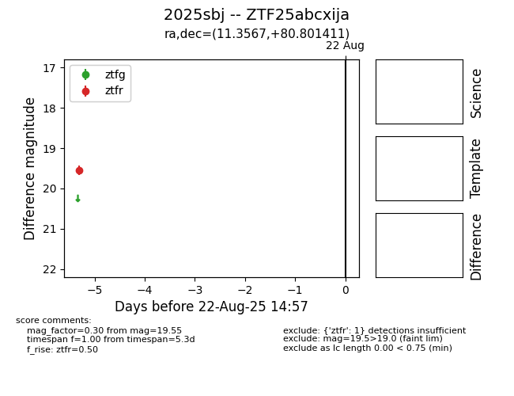

Target 2025sbj at 2025-08-21 09:29, see:
FINK: fink-portal.org/ZTF25abcxija
Lasair: lasair-ztf.lsst.ac.uk/objects/ZTF25abcxija
ALeRCE: alerce.online/object/ZTF25abcxija
TNS: wis-tns.org/object/2025sbj
YSE: ziggy.ucolick.org/yse/transient_detail/2025sbj
alt names
ZTF25abcxija (ztf,alerce)
2025sbj (tns,yse)
coordinates:
equatorial (ra, dec) = (11.3567,+80.80141)
galactic (l, b) = (122.6795,+17.93261)
photometry
last ztfr=19.55
1 ztfr detections
